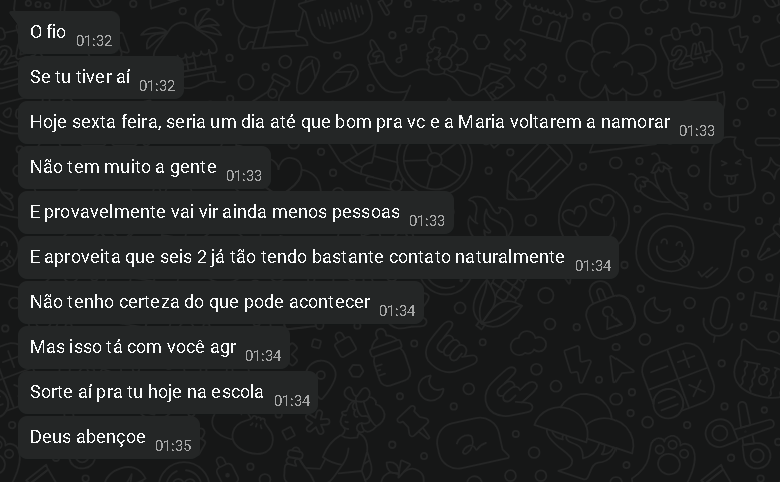

.png)
.png)
.png)
.png)
.png)
.png)
.png)
essa mengaem me deu um pouco de esperança sobre isso
.png)
.png)
.png)
no dia eu tava tentando processar tudo oque aconteceu, mas o João ainda sim continuava a me motivar sobre
.png)
.png)
.png)
a partir daqui começou um outro assunto que não importa (era eu reclamando sobre psicologa e tals)
.png)
.png)
e nesse meio tempo todo, eu fiquei tentando me aproximar mais de você novamente, porque sinceramente
tentar voltar um relacionamento donada assim é muito difícil e estranho
e bem, teve aquele dia que eu te chamei pra conversar sobre a sua saude mental e tals
eu contei pra ele tudo sobre, pra ele tentar me ajudar tambem
(hora das prints denovo yayyyyy-)
.png)
.png)
.png)
.png)
.png)
e apartir disso que eu fiquei focando mais na sua saude mental
eu sei que eu não sou muito bom em ajudar, mas eu to tentando o meu melhor
e uma outra coisa também, é que no dia dos namorados (12/06) o João me disse isso aqui

eu ia tentar fazer algo, mas infelizmente todo mundo faltou-
ai tipo, eu fiquei preocupado com umas coisas
era sobre se você e a Molly tavam juntos
e se tivesse, eu não iria querer atrapalhar o relacionamento de vocês
mas quando não tinha nada, eu decidi progredir
ai veio sobre o vini, eu pensei "talvez ela deve ta gostando dele"
mas até hoje (dia 18/06) eu acho que não
e um problema em mim mesmo que eu vejo
eu não consigo conversar com você alguma coisa, e eu meio que penso em tentar mas não consigo
mas é... eu acho que isso é tudo
eu to escrevendo isso aqui e desse jeito porque eu achei interessante tambem
é uma forma boa de expressar oque eu sinto sobre tudo isso